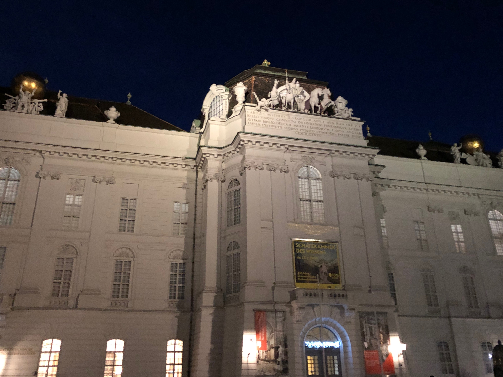
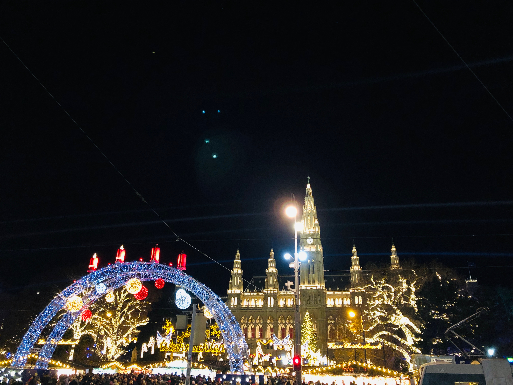
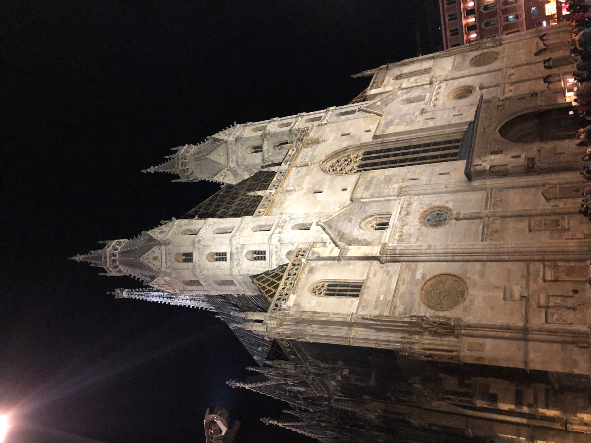
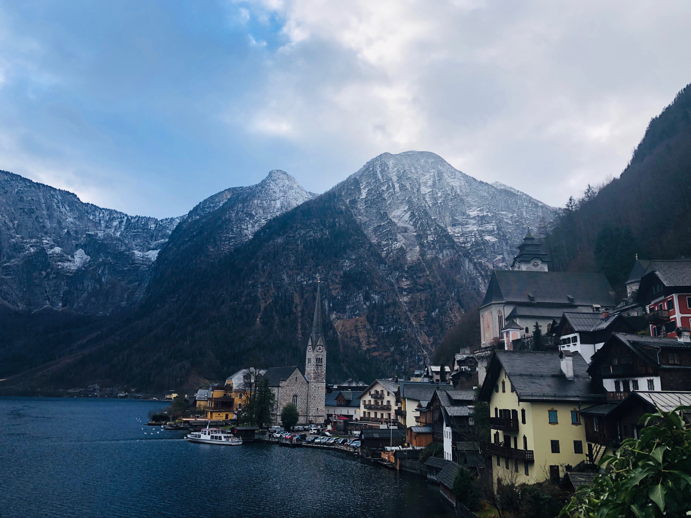

프라하
소개
관광지
번외추천!
빈(비엔나)
소개
관광지
번외추천!
싱가폴
소개
관광지
번외추천!
빈 소개

오스트리아의 수도
동유럽과 서유럽 사이의 관문 역할
건축뿐만 아니라 음악에서도 수세기 동안 세계적 중심지
관광지 1

빈 시청사
1883년 완공된 네오고딕 양식의 건물
여름엔 필름 페스티벌, 겨울엔 크리스마스 시장이 열리는 곳
트램 1, 2, D번 Rathausplatz에서 하차, 또는 U2호선 Rathaus역에서 하차 후 도보 3분
관광지 2

슈테판 대성당
빈의 랜드마크 중 하나
오스트리아 최고의 고딕식 성당
wien mitte 역에서 하차 후 도보 10분
번외추천!

할슈타트
잘츠카머구트의 진주
영화 [사운드오브뮤직]의 배경
날씨가 좋으면 마을 풍경이 호수에 비쳐 데칼코마니를 그려 내는데, 그 모습이 너무도 아름다워 유네스코 세계 문화유산 문화 풍경 부문에 등재됨
빈 서역에서 기차로 할슈타트 역 하차(3시간 30분 소요), 할슈타트 역에서 페리로 환승(5분 소요).